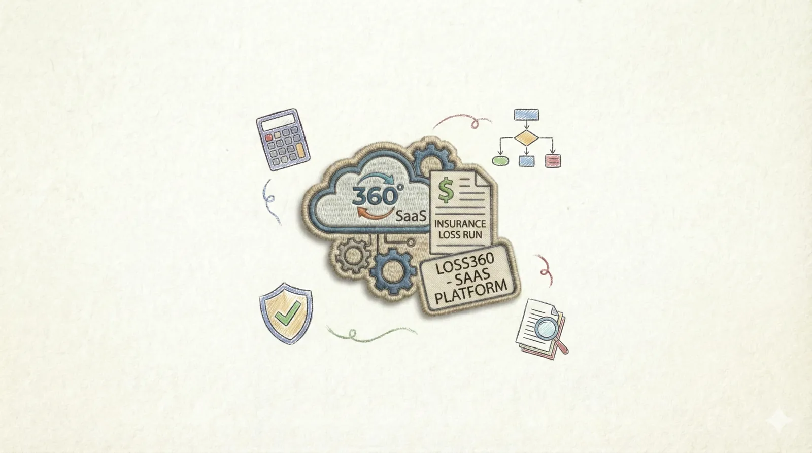

Docuvera - Loss360
Project Overview
As the Lead Engineer and Solution Architect at Trellissoft, I designed and led the development of Docuvera - Loss360, an enterprise-grade multi-tenant SaaS platform that changes how insurance companies process loss run documents. The platform combines a purpose-built OCR engine with domain-specific Large Language Models to automate the extraction and analysis of insurance claims data from unstructured documents.

Loss run reports-critical documents containing historical claims data-traditionally arrive in varied formats (PDFs, scans, spreadsheets) with no standardization, creating significant bottlenecks in underwriting workflows. Loss360 addresses this challenge by intelligently processing these documents regardless of format, extracting structured data, and providing actionable insights through advanced analytics-all while maintaining enterprise-grade security and data isolation for multiple client organizations.
The Challenge
Insurance underwriters spend countless hours manually reviewing and extracting data from loss run documents. Each insurer formats these reports differently, making automation difficult with traditional approaches. Key challenges included:
- Extreme variability in document formats across insurance carriers
- Complex table structures with varying layouts and terminology
- Need for context understanding beyond simple text extraction
- Multi-tenant requirements with strict data isolation and security
- Dynamic schema requirements varying by line of business (LOB)
- Human-in-the-loop validation for accuracy assurance
Solution Architecture
Document Upload → OCR Processing → LLM Extraction → Human Validation → Analytics & Insights
As the solution architect, I designed a scalable microservices-based architecture that integrates proprietary OCR and LLM models. The system architecture emphasizes:
Core System Components
AI/ML Layer
Backend & Infrastructure
DevOps & Security
Key Features & Capabilities
Intelligent Document Processing
- Multi-Format Support: Processes PDFs, scanned images, Excel files, and various document types
- Advanced OCR: Proprietary OCR engine optimized for insurance documents with varying quality
- Context-Aware Extraction: LLM-powered understanding of document structure and semantics
- Dynamic Field Configuration: Customizable extraction schema per line of business
Enterprise Multi-Tenancy
- Complete Data Isolation: Separate database schemas ensuring zero cross-tenant data leakage
- Flexible Configuration: Per-tenant feature toggles and model selection
- Scalable Architecture: Supports multiple client organizations on shared infrastructure
- Role-Based Access Control: Granular permissions at tenant, LOB, and user levels
Human-in-the-Loop Validation
- Interactive Review Interface: Side-by-side document viewer with editable extraction results
- Confidence Indicators: Highlighting of uncertain extractions for focused review
- Audit Trail: Complete tracking of all edits and corrections
- Feedback Loop: User corrections feed back into model improvement processes
Analytics & Insights
- Real-Time Dashboards: Key performance indicators for claims and loss metrics
- Trend Analysis: Historical claims patterns and loss ratios across time periods
- Line of Business Views: Segregated analytics for different insurance lines
- Export Capabilities: Structured data export in CSV, Excel, and JSON formats
Technical Highlights
# Multi-Tenant Document Processing Pipeline
class DocumentProcessingPipeline:
"""
Core pipeline orchestrating OCR and LLM processing
with tenant-specific configuration and isolation
"""
def process_submission(tenant_id, lob_id, document):
# Step 1: Tenant context & security validation
tenant_context = get_tenant_context(tenant_id)
validate_tenant_access(tenant_context, lob_id)
# Step 2: OCR processing with tenant-specific model
ocr_model = tenant_context.get_ocr_model(lob_id)
extracted_text = ocr_model.process(document)
# Step 3: LLM extraction using configured schema
llm_model = tenant_context.get_llm_model(lob_id)
extraction_schema = tenant_context.get_fields_config(lob_id)
structured_data = llm_model.extract_fields(
text=extracted_text,
schema=extraction_schema
)
# Step 4: Store in tenant-isolated database
store_results(
tenant_schema=tenant_context.db_schema,
lob_id=lob_id,
data=structured_data
)
# Step 5: Trigger real-time notification
notify_user(tenant_id, submission_id, status="completed")
return structured_data
# Multi-Tenant Data Isolation Pattern
class TenantIsolationMiddleware:
"""
Ensures all database operations are scoped to tenant schema,
preventing any possibility of cross-tenant data access
"""
def set_tenant_context(request):
tenant_id = extract_tenant_from_auth(request)
schema_name = f"tenant_{tenant_id}"
# Set PostgreSQL search_path to tenant schema
db.execute(f"SET search_path TO {schema_name}")
# All subsequent queries automatically scoped
return tenant_idArchitectural Decisions & Leadership
As the solution architect, I made several critical technical decisions that shaped the platform:
Separate Schema Multi-Tenancy: I architected the system using PostgreSQL schema isolation rather than shared tables, ensuring fail-closed security and simplified per-tenant operations. This design choice eliminated entire classes of potential data leakage vulnerabilities.
Asynchronous Processing Architecture: Designed an event-driven pipeline with job queues to decouple document uploads from processing. This enables horizontal scaling of OCR/LLM workers independently and prevents web application timeouts on long-running operations.
Dynamic Schema Configuration: Rather than hard-coding extraction fields, I designed a flexible metadata-driven system allowing tenant admins to define custom fields per LOB. This dramatically reduced onboarding time for new clients and eliminated the need for custom development per tenant.
Human-in-the-Loop Integration: Recognized that 100% AI accuracy is unrealistic for critical financial data. I designed elegant review workflows that make human validation efficient, with audit trails that simultaneously improve user trust and provide training data for model refinement.
Performance & Impact
Business Value Delivered
| Metric | Before Loss360 | After Loss360 | Improvement |
|---|---|---|---|
| Document Processing Time | 45-60 minutes | 2-5 minutes | 90% faster |
| Data Entry Errors | 8-12% | < 2% | 75% reduction |
| Underwriter Productivity | 15 docs/day | 80+ docs/day | 5.3x increase |
| Client Onboarding | 2-3 weeks | 2-3 days | 85% faster |
Security & Compliance
Given the sensitive nature of insurance claims data, I designed the platform with security as a foundational principle, not an afterthought:
- Multi-Factor Authentication: Mandatory 2FA using TOTP authenticator apps for all users
- Data Encryption: End-to-end encryption for data in transit (TLS 1.3) and at rest (AES-256)
- Access Controls: Fine-grained RBAC with least-privilege principle across all system layers
- Audit Logging: Comprehensive tracking of all data access, modifications, and exports
- Data Retention: Configurable retention policies with automated archival and secure deletion
- Compliance Ready: Architecture designed to support SOC 2, ISO 27001, and HIPAA requirements
Leadership & Team Management
Beyond technical architecture, I led a cross-functional team of 8 engineers through the entire product lifecycle:
- Defined technical roadmap and sprint planning for a 14-month development cycle
- Conducted architecture review sessions and established coding standards
- Mentored junior developers on AI/ML integration and microservices patterns
- Collaborated with stakeholders to translate business requirements into technical specifications
- Managed CI/CD pipeline setup and deployment strategies for production releases
- Presented technical demos and conducted training for client success teams
Technical Challenges Overcome
Variable Document Quality: Loss runs often arrive as poor-quality scans with skewed images and faded text. I implemented adaptive preprocessing pipelines with image enhancement algorithms that normalize documents before OCR, improving text extraction accuracy by 40%.
Dynamic Table Structures: Unlike forms with fixed fields, loss runs contain tables with varying columns and layouts. I designed a hybrid approach combining traditional table detection with LLM-based semantic understanding, allowing the system to handle both structured tables and narrative text seamlessly.
Scale & Performance: Processing hundreds of multi-page documents simultaneously required careful resource management. I architected a distributed worker system with intelligent job queuing, GPU resource pooling for OCR/LLM inference, and Redis-based caching to achieve sub-2-minute processing times even under peak load.
Model Versioning & Updates: As we improved our AI models, we needed upgrades without disrupting active tenants. I designed a model registry system allowing per-tenant model selection with blue-green deployment patterns, enabling zero-downtime model updates and A/B testing of new versions.
Key Learnings & Innovations
- Combining OCR with LLMs provides dramatically better results than either technology alone for unstructured documents
- Multi-tenant architecture decisions made early are extremely difficult to change-invest upfront in proper isolation
- Human validation workflows aren't just about catching errors-they're invaluable for generating training data
- In enterprise SaaS, flexibility (configurable fields, feature toggles) is as important as core functionality
- Real-time notifications dramatically improve user experience and reduce support inquiries about processing status
Future Roadmap
- Advanced anomaly detection for identifying unusual claim patterns
- Predictive analytics for loss forecasting and risk scoring
- Integration with policy administration systems via REST APIs and webhooks
- Mobile application for on-the-go document submission and review
- Multilingual support for international insurance markets
- Active learning pipelines for continuous model improvement from user corrections
About Docuvera - Loss360
Docuvera - Loss360 is a proprietary product of Trellissoft, where I served as Lead Engineer and Solution Architect. The platform is currently deployed in production serving multiple insurance carriers and brokers, processing thousands of loss run documents monthly.
Note: Specific client names and detailed implementation specifics are confidential. Technical details shared represent architectural patterns and anonymized metrics.